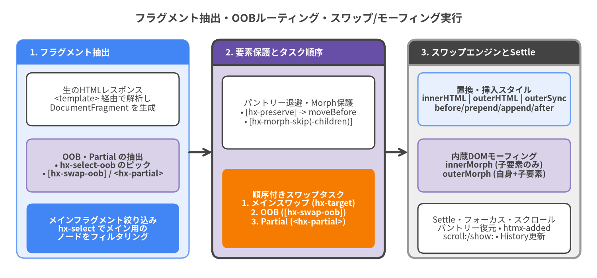

ターゲットとスワップ属性 (Target & Swap Attributes)
ターゲットとスワップ属性は、サーバーから返却されたHTMLフラグメントをDOM内のどこに配置するか、どのスワップまたはDOMモーフィング（Morphing）アルゴリズムを適用するか、Out-of-Band（hx-swap-oob および <hx-partial>）による複数箇所の同時更新をどのように抽出するか、そして状態を持つ要素（<video>, <iframe>, サードパーティ製ウィジェットなど）をスワップ前後でどのように保持するかを制御します。
| シンボル | カテゴリ | デフォルト / スコープ | 属性継承 | 主な機能 |
|---|---|---|---|---|
hx-target |
メインターゲット解決 | this（Boost時は document.body） |
非継承（共有時は :inherited を付与） |
標準CSSセレクタ + 拡張相対セレクタ（this, closest, find, next, previous, host, global） |
hx-swap |
スワップ方式・タイミング | htmx.config.defaultSwapStyle (innerHTML) |
デフォルトで継承 | 全12種類のスワップスタイル（innerMorph, outerMorph, outerSync 含む）+ 12種類のHCON修飾子 |
hx-swap-oob |
Out-of-Band属性 | #id または <style>:<selector> |
非継承（レスポンス側マーカー） | レスポンスから副次フラグメントを抽出し、メインスワップ完了後に別ターゲットへ反映 |
<hx-partial> |
Out-of-Band要素 | hx-target または id で指定 |
該当なし（HTMLカスタム要素） | htmx 4のマルチターゲット専用ラッパー要素（<hx-partial hx-target="..." hx-swap="...">） |
hx-select |
レスポンス抽出フィルタ | レスポンス全体 | デフォルトで継承 | メインスワップに使用するノードをCSSセレクタで抽出 |
hx-select-oob |
クライアント主導OOB | なし | デフォルトで継承 | カンマ区切りの <selector>[:<swapStyle>] でレスポンスから要素を抜き出しOOBスワップを実行 |
hx-morph-skip |
モーフィング保護 | htmx.config.morphSkip に一致 |
非継承 | innerMorph / outerMorph 実行時に要素の属性と子孫ツリーの両方の変更をスキップ |
hx-morph-skip-children |
モーフィング保護 | htmx.config.morphSkipChildren に一致 |
非継承 | 要素自身の属性はモーフィングしつつ、内部の子孫DOMツリーの変更を凍結 |
hx-preserve |
パントリー要素保持 | 一意な id 属性が必須 |
非継承 | スワップ前後でライブDOM要素（<video>, <iframe> 等）を moveBefore() で退避・復元 |

Source Code
from drawlib.canvas import save, setup
from drawlib.lines import line
from drawlib.shapes import rectangle
from drawlib.smartarts import Panel
from drawlib.styles import Styles
from drawlib.text import text
setup(width=180, height=84, dpi=150)
text((90, 78.5), "フラグメント抽出・OOBルーティング・スワップ/モーフィング実行", style=Styles.DarkBold.patch(text_size=13.0))
# Column 1: Response Parsing & Extraction
p1 = Panel(
"1. フラグメント抽出",
style=Styles.PrimaryNeutral,
header_style=Styles.PrimaryFlat,
text_style=Styles.WhiteBold.patch(text_size=10.5),
header_height=7.5,
)
p1.draw((5, 6), width=52, height=66, align="bottom_left")
rectangle((31, 54), width=46, height=16, style=Styles.White.patch(shape_r=1.8), text="生のHTMLレスポンス\n<template> 経由で解析し\nDocumentFragment を生成", text_style=Styles.Dark.patch(text_size=10.0))
rectangle((31, 34), width=46, height=16, style=Styles.SecondaryNeutral.patch(shape_r=1.8), text="OOB・Partial の抽出\n• hx-select-oob のピック\n• [hx-swap-oob] / <hx-partial>", text_style=Styles.DarkBold.patch(text_size=10.0))
rectangle((31, 15), width=46, height=15, style=Styles.PrimaryFlat.patch(shape_r=1.8), text="メインフラグメント絞り込み\nhx-select でメイン用の\nノードをフィルタリング", text_style=Styles.WhiteBold.patch(text_size=10.0))
# Column 2: Preservation & Task Queue
p2 = Panel(
"2. 要素保護とタスク順序",
style=Styles.SecondaryNeutral,
header_style=Styles.SecondaryBold,
text_style=Styles.WhiteBold.patch(text_size=10.5),
header_height=7.5,
)
p2.draw((64, 6), width=52, height=66, align="bottom_left")
rectangle((90, 50), width=46, height=22, style=Styles.White.patch(shape_r=1.8), text="パントリー退避・Morph保護\n• [hx-preserve] -> moveBefore\n• [hx-morph-skip(-children)]", text_style=Styles.Dark.patch(text_size=10.0))
rectangle((90, 21), width=46, height=24, style=Styles.AccentFlat.patch(shape_r=1.8), text="順序付きスワップタスク\n1. メインスワップ (hx-target)\n2. OOB ([hx-swap-oob])\n3. Partial (<hx-partial>)", text_style=Styles.WhiteBold.patch(text_size=10.0))
# Column 3: Swap Engines & Post-Swap
p3 = Panel(
"3. スワップエンジンとSettle",
style=Styles.Neutral,
header_style=Styles.DarkBold,
text_style=Styles.WhiteBold.patch(text_size=10.5),
header_height=7.5,
)
p3.draw((123, 6), width=52, height=66, align="bottom_left")
rectangle((149, 54), width=46, height=16, style=Styles.PrimaryNeutral.patch(shape_r=1.8), text="置換・挿入スタイル\ninnerHTML | outerHTML | outerSync\nbefore/prepend/append/after", text_style=Styles.DarkBold.patch(text_size=10.0))
rectangle((149, 34), width=46, height=16, style=Styles.SecondaryNeutral.patch(shape_r=1.8), text="内蔵DOMモーフィング\ninnerMorph (子要素のみ)\nouterMorph (自身+子要素)", text_style=Styles.DarkBold.patch(text_size=10.0))
rectangle((149, 15), width=46, height=15, style=Styles.White.patch(shape_r=1.8), text="Settle・フォーカス・スクロール\nパントリー復元 • htmx-added\nscroll:/show: • History更新", text_style=Styles.Dark.patch(text_size=10.0))
# Connectors
line((57, 38), (64, 38), arrow_head="->", style=Styles.DarkBold)
line((116, 38), (123, 38), arrow_head="->", style=Styles.DarkBold)
save()
メインターゲットとスワップ方式の指定 (Primary Target & Swap Specification)#
hx-target#
サーバーから返されたレスポンスHTMLをスワップする先のターゲットDOM要素を指定します。htmx v4.0.1では、hx-target はデフォルトでは子孫要素へ継承されません（親コンテナで共有したい場合は hx-target:inherited="#main" のように :inherited を明示します）。
構文 (Syntax)
<element hx-target="<css-selector> | <extended-selector>"></element>
拡張セレクタリファレンス (__resolveRelative / __querySelectorAllExt)
| セレクタ構文 | htmx v4.0.1 における解決動作 |
|---|---|
<css-selector> |
現在のルートノード（document または自身が属する ShadowRoot）内で検索される標準CSSセレクタ。 |
this / self |
トリガーされた要素自身に解決されます。 |
closest <selector> |
祖先ツリーを上方向に探索（elt.closest(selector)）し、最も近い一致要素を返します。 |
find <selector> |
要素の子孫を検索（elt.querySelector(selector)）し、最初に一致した要素を返します。 |
findAll <selector> |
一致するすべての子孫要素（elt.querySelectorAll(selector)）を返します。 |
next |
直後の兄弟要素（elt.nextElementSibling）に解決されます。 |
next <selector> |
ドキュメント順で要素より後ろを走査し、最初に <selector> に一致する要素を返します。 |
previous |
直前の兄弟要素（elt.previousElementSibling）に解決されます。 |
previous <selector> |
ドキュメント順で要素より前を逆向きに走査し、最も近い <selector> 一致要素を返します。 |
body |
document.body に解決されます。 |
document / window |
document または window に解決されます（主に hx-trigger の from: で使用）。 |
host |
Shadow DOM（ShadowRoot）内部にある場合、rootNode.host に解決されます。 |
global <selector> |
要素がカプセル化された ShadowRoot 内にある場合でも、最上位の document 全体から検索します。 |
使用例 (Usage Examples)
<!-- 明示的なIDをターゲットに指定 -->
<button hx-get="/api/details/7" hx-target="#detail-pane">詳細を表示</button>
<section id="detail-pane"></section>
<!-- closest と next を用いた相対ターゲット指定 -->
<div class="card">
<button hx-post="/api/cards/7/like" hx-target="next .like-count">いいね</button>
<span class="like-count">12</span>
<button hx-delete="/api/cards/7" hx-target="closest .card" hx-swap="outerHTML">カードを削除</button>
</div>
<!-- :inherited を用いて子孫ボタンにターゲットを継承させる -->
<div hx-target:inherited="#workspace-panel">
<button hx-get="/views/overview">概要</button>
<button hx-get="/views/metrics">メトリクス</button>
</div>
<main id="workspace-panel"></main>
hx-swap#
ターゲット要素に対してレスポンスHTMLをどのように挿入・置換・モーフィング（差分適用）・削除するか、およびスワップ遅延、View Transitions、タイトル更新、スクロール動作を制御します。モーフィングに外部拡張が必要だったhtmx 2とは異なり、htmx v4.0.1ではコア本体にDOMモーフィング（innerMorph と outerMorph）および同期的外側置換（outerSync）が標準搭載されています。
構文 (Syntax)
<element hx-swap="<swapStyle> [modifier:value ...]"></element>
全12種類のスワップスタイル (All 12 Swap Styles in htmx v4.0.1)
| スワップスタイル | 旧エイリアス | DOM更新の動作仕様 |
|---|---|---|
innerHTML |
(デフォルト) | ターゲット要素のすべての子ノードをレスポンスフラグメントで置き換えます。 |
outerHTML |
— | ターゲット要素全体をレスポンスフラグメントで置き換えます（target.replaceWith(fragment)）。※ swap: 遅延併用時、外枠を先に置換し内部をSettleフェーズで展開します。 |
outerSync |
— | Settleフェーズ内でターゲット要素全体を同期的に一括置換（target.replaceWith(fragment)）します。履歴復元（History Restore）などで内部使用されるほか、1フレーム内でアトミックに要素全体を置換したい場合に適しています。 |
innerMorph |
— | 内蔵DOMモーフィング：ターゲットの子要素群をレスポンスフラグメントと比較してインプレースで差分更新します。フォーカス、入力選択範囲、CSSトランジション状態、未変更のDOMノードが維持されます。 |
outerMorph |
— | 内蔵DOMモーフィング：ターゲット要素自身（属性を含む）とその子要素群の両方をレスポンスフラグメントと比較してインプレースで差分更新します。 |
textContent |
— | HTMLマークアップとして解釈せず、target.textContent = fragment.textContent としてプレーンテキストを設定します。 |
before |
beforebegin |
ターゲット要素の直前に兄弟ノードとして挿入します（target.before(fragment)）。 |
prepend |
afterbegin |
ターゲット要素内部の先頭の子要素の前に挿入します（target.prepend(fragment)）。 |
append |
beforeend |
ターゲット要素内部の末尾の子要素の後に挿入します（target.append(fragment)）。 |
after |
afterend |
ターゲット要素の直後に兄弟ノードとして挿入します（target.after(fragment)）。 |
delete |
— | レスポンス内容にかかわらず、ターゲット要素をDOMから削除します（target.remove()）。 |
none |
— | メインターゲットのDOMを変更しません（Out-of-Bandの hx-swap-oob や <hx-partial> は通常通り処理されます）。 |
全12種類の hx-swap 修飾子 (Swap Modifiers)
| 修飾子構文 | 値の型 | デフォルト値 | htmx v4.0.1 における説明と動作 |
|---|---|---|---|
swap:<time> |
時間 (100ms, 0.5s) |
htmx.config.defaultSwapDelay (0) |
レスポンス受信からDOMスワップを実行するまでの待機時間（.htmx-swapping によるCSS退場アニメーション用）。 |
settle:<time> |
時間 (20ms, 100ms) |
htmx.config.defaultSettleDelay (0) |
スワップ後、.htmx-added クラスを除去して htmx:after:swap を発火するまでの待機時間（CSS登場トランジション用）。 |
transition:true|false |
真偽値 | htmx.config.transitions (false) |
ブラウザが対応している場合、スワップタスク全体を document.startViewTransition() でラップします。 |
ignoreTitle:true|false |
真偽値 | false |
true の場合、レスポンス内の <title> タグによる document.title の更新をスキップします。 |
strip:true|false |
真偽値 | メインは false、OOBは !style.startsWith('outer') |
true の場合、レスポンスフラグメントの最上位ルート要素のタグを剥がし、その子要素群のみをスワップします。 |
focusScroll:true|false |
真偽値 | htmx.config.defaultFocusScroll (false) |
一致する id を持つアクティブ要素へフォーカスを復元する際、ビューポートをスクロールさせるかどうかを制御します（focus({ preventScroll: !focusScroll })）。 |
scroll:top|bottom |
'top' | 'bottom' |
なし | ターゲット（または scrollTarget）の scrollTop を先頭（0）または末尾（scrollHeight）に設定します。 |
scrollTarget:<selector> |
CSS / 拡張セレクタ | メインターゲット | scroll:top または scroll:bottom でスクロールさせるコンテナ要素を指定します。 |
show:top|bottom |
'top' | 'bottom' |
hx-boost 有効時は 'top' |
ターゲット（または showTarget）に対して scrollIntoView({ block: 'start' | 'end', behavior: htmx.config.scrollBehavior }) を呼び出します。 |
showTarget:<selector> |
CSS / 拡張セレクタ | メインターゲット | show:top または show:bottom で画面内に表示させる対象要素を指定します。 |
swapEmpty:true|false |
真偽値 | false |
<hx-partial> や [hx-swap-oob] を抽出した後にメインレスポンスが空になった場合でも、メインスワップを強制実行します。 |
target:<selector> |
CSS / 拡張セレクタ | hx-target の値 |
hx-swap の指定文字列内で直接ターゲット要素を上書きします（HX-Reswap ヘッダーや hx-status:XXX 内で特に有用）。 |
使用例 (Usage Examples)
<!-- 1. View Transitions を有効化した内蔵 innerMorph によるダッシュボード更新 -->
<section id="dashboard"
hx-get="/api/dashboard/refresh"
hx-trigger="every 10s"
hx-swap="innerMorph transition:true">
<!-- 入力中のフォームや開いている details 要素の状態がそのまま維持される -->
</section>
<!-- 2. チャットメッセージを末尾追加し、スクロールコンテナを最下部へスクロール -->
<form hx-post="/api/chat/messages"
hx-target="#message-list"
hx-swap="append scroll:bottom scrollTarget:#chat-viewport">
<input type="text" name="text" required>
<button type="submit">送信</button>
</form>
<!-- 3. swap 遅延を用いたフェードアウト削除 -->
<div class="notification"
hx-delete="/api/notifications/99"
hx-target="this"
hx-swap="delete swap:300ms">
通知を閉じる
</div>
Out-of-Band・マルチターゲット更新 (Out-of-Band & Multi-Target Swaps)#
1回のユーザー操作によってページ内の複数の独立した領域（例：商品をカートに追加した際に、メインの商品カードとヘッダーのカートバッジの両方を更新する場合など）を更新する際、htmx v4.0.1では hx-swap-oob、<hx-partial>、hx-select-oob の3つの仕組みを利用できます。
hx-swap-oob#
サーバーから返却されるHTMLレスポンス内の要素に付与することで、その要素をメインのレスポンスフラグメントから切り離し、メインスワップ完了後にドキュメント内の対応するターゲット要素へ直接スワップします。
構文（サーバーレスポンスHTML内）
<!-- 要素の id 属性に一致するターゲットへデフォルトの outerHTML でスワップ -->
<div id="cart-badge" hx-swap-oob="true">3 件</div>
<!-- スワップスタイルと任意のターゲットセレクタを明示指定 -->
<div id="notifications" hx-swap-oob="prepend">新しいアラートがあります</div>
<li hx-swap-oob="append:#activity-log">ユーザーがログインしました</li>
| 属性値のフォーマット | 解決されるターゲット | 解決されるスワップスタイルと strip の既定値 |
|---|---|---|
hx-swap-oob="true" または hx-swap-oob="" |
#<element.id> |
outerHTML（strip: false） |
hx-swap-oob="<swapStyle>" |
#<element.id> |
<swapStyle>（スタイルが outer で始まらない限り strip: true） |
hx-swap-oob="<swapStyle>:<selector>" |
<selector> に一致する全要素 |
<swapStyle>（スタイルが outer で始まらない限り strip: true） |
使用例 (Usage Examples)
<!-- POST /api/cart/items に対するサーバーレスポンス -->
<!-- 1. メインスワップ用コンテンツ（トリガーしたボタンの hx-target へスワップ） -->
<button class="btn-success" disabled>カートに追加済み ✓</button>
<!-- 2. ヘッダーバッジの Out-of-Band 更新（#cart-count を outerHTML で置換） -->
<span id="cart-count" hx-swap-oob="true" class="badge">4</span>
<!-- 3. #toast-container へトースト通知を末尾追加 -->
<div hx-swap-oob="append:#toast-container">
<div class="toast">ワイヤレスキーボードをカートに追加しました。</div>
</div>
<hx-partial>#
htmx v4.0.1で新設された <hx-partial> は、マルチターゲットレスポンスを明快かつ宣言的に記述するための専用HTML要素です。スワップスタイルが outerHTML か innerHTML かによってルート要素の剥がし方（strip）が変わる hx-swap-oob とは異なり、<hx-partial> は常に純粋な転送用コンテナ（エンベロープ）として機能し、その内部の子ノード群を指定された hx-target（または #<id>）へ hx-swap（デフォルトは htmx.config.defaultSwapStyle すなわち innerHTML）に従ってスワップします。
さらに、レスポンス内に <hx-partial> が含まれており、それを抽出した後のメインレスポンスが空である場合、htmx v4.0.1は（swapEmpty:true が明示されない限り）自動的に空のメインスワップをスキップするため、メインターゲットを誤って空にしてしまう心配がありません。
構文（サーバーレスポンスHTML内）
<hx-partial hx-target="<selector>" [hx-swap="<swapSpec>"]>
<!-- ターゲットへスワップする内部HTMLペイロード -->
</hx-partial>
<!-- id 属性を用いたショートハンド（#<id> がターゲットになる） -->
<hx-partial id="sidebar-summary" hx-swap="innerMorph">
<!-- 内部HTMLペイロード -->
</hx-partial>
<hx-partial> の属性 |
必須 / 任意 | htmx v4.0.1 における説明と動作 |
|---|---|---|
hx-target |
必須（id 指定時は省略可） |
更新対象となるDOM要素を特定するCSSセレクタまたは拡張セレクタ。 |
id |
ターゲットのフォールバック | hx-target が省略された場合、#${id} をターゲットとして使用します。 |
hx-swap |
任意 | 任意の有効な hx-swap スタイルおよび修飾子文字列（省略時は htmx.config.defaultSwapStyle すなわち innerHTML）。 |
使用例 (Usage Examples)
<!-- メインターゲット用のダミー出力なしで複数の領域を同時に更新するサーバーレスポンス -->
<hx-partial hx-target="#order-table tbody" hx-swap="prepend">
<tr id="order-501">
<td>#501</td>
<td>処理待ち</td>
</tr>
</hx-partial>
<hx-partial id="order-stats" hx-swap="innerMorph">
<div class="stat">総注文数: <strong>128</strong></div>
<div class="stat">処理待ち: <strong>14</strong></div>
</hx-partial>
レスポンス抽出フィルタ属性 (Response Filtering Attributes)#
サーバーが専用のパーシャル（部分HTML）ではなく完全なHTMLページや大きなコンポーネントテンプレートを返す場合、hx-select と hx-select-oob を使用してクライアント側で必要な要素だけを抽出できます。
hx-select#
リクエストを発行する要素（または継承元の祖先要素）に指定し、サーバーのHTMLレスポンスから指定したCSSセレクタに一致する要素のみを抽出してメインスワップに使用します。
構文 (Syntax)
<element hx-get="<url>" hx-select="<css-selector>" hx-target="<target>"></element>
| 項目 | htmx v4.0.1 における仕様 |
|---|---|
| 実行順序 | __handleResponse() 内において、hx-select-oob および [hx-swap-oob] / <hx-partial> の抽出処理の後に実行されます。 |
| 動的オーバーライド | hx-status:XXX="select:<selector>" または HX-Reselect HTTPレスポンスヘッダーによって上書き可能です。 |
| 属性継承 | デフォルトで継承されます。 |
使用例 (Usage Examples)
<!-- フルページ /docs/install を取得し、#article-content のみを抽出してスワップ -->
<a hx-get="/docs/install"
hx-select="#article-content"
hx-target="#doc-viewer"
hx-push-url="true">
インストールガイド
</a>
<article id="doc-viewer"></article>
hx-select-oob#
リクエストを発行する要素（または継承元の祖先要素）に指定し、サーバーレスポンスから1つ以上の要素を抽出してOut-of-Bandスワップへと昇格させます。サーバー側のHTMLに hx-swap-oob 属性を書き加えることなく複数箇所を更新できます。
構文 (Syntax)
<element hx-get="<url>" hx-select-oob="<selector>[:<oobSwapSpec>], ..."></element>
| 指定フォーマット | htmx v4.0.1 における動作 |
|---|---|
#sidebar |
レスポンス内の #sidebar を抽出し、ライブDOMの #sidebar へ outerHTML（hx-swap-oob="true" 相当）でスワップします。 |
#alerts:innerHTML |
レスポンス内の #alerts を抽出し、その子要素群をライブDOMの #alerts へ innerHTML でスワップします。 |
.metric-card:outerMorph:#kpi-box |
レスポンス内の .metric-card を抽出し、ライブDOMの #kpi-box に対して outerMorph を実行します。 |
使用例 (Usage Examples)
<!-- フルページレスポンスからメインの商品グリッドとページネーションバー・件数の両方を更新 -->
<button hx-get="/products?page=3"
hx-select="#product-grid"
hx-select-oob="#pagination-bar:outerMorph, #total-count"
hx-target="#product-grid"
hx-swap="outerMorph">
3ページ目へ
</button>
DOMモーフィング保護・要素状態保持属性 (DOM Morphing & State Preservation)#
再生中の <video> 要素、<iframe> 埋め込み、または地図やチャートCanvasなどのサードパーティ製JavaScriptウィジェットを含む領域を更新する場合、htmx v4.0.1のモーフィングスキップ属性またはパントリー保持属性を使用します。
hx-morph-skip#
htmx内蔵のモーフィングエンジン（innerMorph および outerMorph）による差分更新の際、対象要素の属性と子孫DOMツリーの両方の変更をスキップして完全に凍結します。デフォルトの htmx.config.morphSkip = '[hx-morph-skip]' セレクタに対応します。
構文 (Syntax)
<element hx-morph-skip></element>
| 項目 | htmx v4.0.1 における仕様 |
|---|---|
| 適用対象 | hx-swap="innerMorph" および hx-swap="outerMorph"（OOBや <hx-partial> でのモーフィングを含む）。 |
| 属性の更新 | なし — 既存要素の属性は一切変更されません。 |
| 子要素の更新 | なし — 内部の子孫ノードは一切変更されません。 |
| グローバル設定 | htmx.config.morphSkip（デフォルト: '[hx-morph-skip]'）でカスタマイズ可能です。 |
使用例 (Usage Examples)
<div id="live-panel" hx-get="/api/panel" hx-trigger="every 5s" hx-swap="innerMorph">
<h2>システムテレメトリ</h2>
<p>CPU負荷: 42%</p>
<!-- サードパーティ製WebGLチャートウィジェットをモーフィング対象から完全に除外 -->
<div id="webgl-chart-container" hx-morph-skip></div>
</div>
hx-morph-skip-children#
htmx内蔵のモーフィングエンジン（innerMorph および outerMorph）に対し、要素自身の属性は通常通り差分更新しつつ、内部の子孫DOMツリーの変更のみをスキップさせます。デフォルトの htmx.config.morphSkipChildren = '[hx-morph-skip-children]' セレクタに対応します。
構文 (Syntax)
<element hx-morph-skip-children></element>
| 項目 | htmx v4.0.1 における仕様 |
|---|---|
| 適用対象 | hx-swap="innerMorph" および hx-swap="outerMorph"。 |
| 属性の更新 | あり — 要素自身の class, data-*, aria-* などの属性はサーバーレスポンスに従って更新されます。 |
| 子要素の更新 | なし — 要素内部の子ノード群はそのまま凍結・保持されます。 |
| グローバル設定 | htmx.config.morphSkipChildren（デフォルト: '[hx-morph-skip-children]'）でカスタマイズ可能です。 |
使用例 (Usage Examples)
<div id="editor-shell" hx-get="/api/doc-state" hx-trigger="every 10s" hx-swap="outerMorph">
<!-- ラッパーの class や data-readonly 属性は更新しつつ、内部のリッチテキストエディタDOMは保護 -->
<div id="rich-editor" class="editor-online" data-readonly="false" hx-morph-skip-children>
<div contenteditable="true">編集中の未保存リッチテキストDOM...</div>
</div>
</div>
hx-preserve#
通常の置換スワップ（innerHTML や outerHTML など）の実行前に、既存のライブDOM要素を一時的な非表示パントリー（Pantry）へ退避させ、スワップ完了後に新しいDOMツリー内の同じ id を持つ位置へ戻します。Element.prototype.moveBefore() をサポートするモダンブラウザでは、htmx v4.0.1はアトミックなDOM移動（__moveBefore）を使用するため、<video>, <audio>, <iframe> などの再生状態やコンテキストがリセットされずに維持されます。
構文 (Syntax)
<element id="<unique-id>" hx-preserve></element>
| 要件 / 動作 | htmx v4.0.1 における仕様 |
|---|---|
id 属性が必須 |
既存DOM上の要素と、サーバーから返却される新しいHTML内のプレースホルダー要素の両方に、同じ一意な id 属性が設定されている必要があります。 |
| アトミックなDOM移動 | ブラウザが対応している場合は parent.moveBefore(preservedElt, placeholder) を優先使用（非対応時は replaceChild にフォールバック）し、<iframe> のブラウジングコンテキストやメディア再生位置を完全に維持します。 |
使用例 (Usage Examples)
<!-- 現在のページと遷移先レスポンスの両方に <video id="promo-stream" hx-preserve> を配置 -->
<article id="lesson-container" hx-get="/lessons/chapter-2" hx-target="this" hx-swap="innerHTML">
<h1>チャプター1: アーキテクチャ概要</h1>
<video id="promo-stream" hx-preserve controls autoplay src="/media/livestream.mp4"></video>
<p>レッスンの解説テキストと演習問題...</p>
</article>